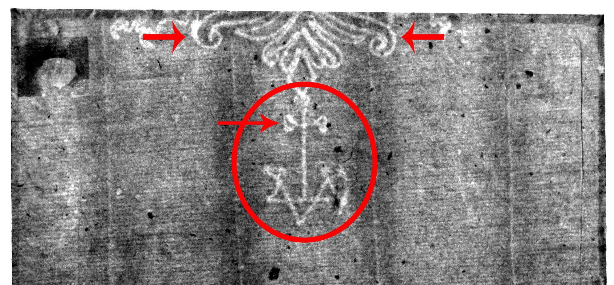

Single-Headed Eagle
See branch diagram↩ Back one step ↻ Restart this branch
Your watermark is Eagle with Basel Crosier, Single-Headed, D.a.
Watermark D.a. can be distinguished by three features, all of which can be identified from this fragment: the eagles’ two tail feathers curl inward , a cross extends from the tail, and several letters are below the cross (marked with red).
________________________________________________________________________
This watermark can be found on the following prints:
- Christ disputing with the doctors: small plate, 1630, British Museum, London.
The watermark on the British Museum’s print helps establish that this impression was created during Rembrandt’s lifetime, and likely printed in the same year the etching was made.
NOTE: This is a quarto sized print, meaning it was printed on one-quarter of a full sheet of paper.
(Erik Hinterding, Rembrandt as an Etcher, 2006, II, 106)
